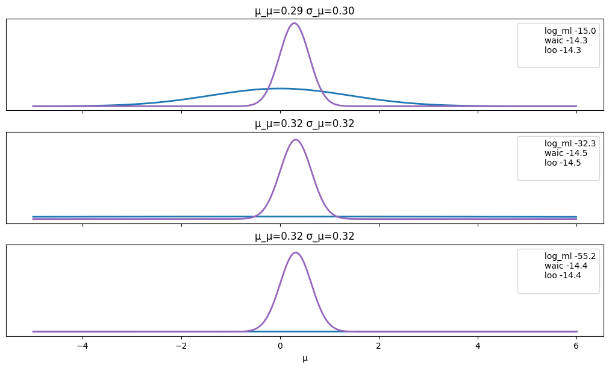
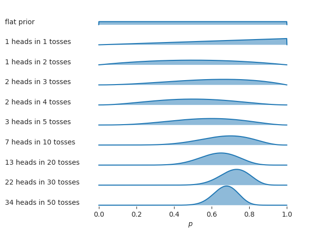
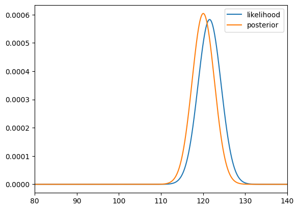
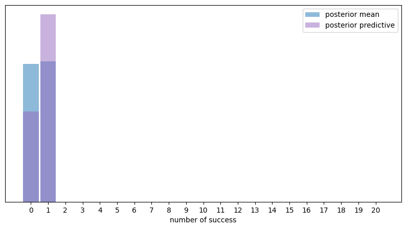

Chapter 5: Extra code, drafts, and cut material#
import numpy as np
import pandas as pd
import matplotlib.pyplot as plt
import seaborn as sns
Beta-binomial demos#
from scipy.special import binom, betaln
def beta_binom(prior, y):
"""
Compute the marginal-log-likelihood for a beta-binomial model,
analytically.
prior : tuple
tuple of alpha and beta parameter for the prior (beta distribution)
y : array
array with "1" and "0" corresponding to the success and fails respectively
"""
α, β = prior
success = np.sum(y)
trials = len(y)
return np.log(binom(trials, success)) + betaln(α + success, β+trials-success) - betaln(α, β)
def posterior_grid(ngrid=10, α=1, β=1, heads=6, trials=9):
grid = np.linspace(0, 1, ngrid)
prior = stats.beta(α, β).pdf(grid)
likelihood = stats.binom.pmf(heads, trials, grid)
posterior = likelihood * prior
posterior /= posterior.sum()
return posterior
def normal_harmonic(sd_0, sd_1, y, s=10000):
post_tau = 1/sd_0**2 + 1/sd_1**2
posterior_samples = stats.norm(loc=(y/sd_1**2)/post_tau, scale=(1/post_tau)**0.5).rvs((s, len(x)))
log_likelihood = stats.norm.logpdf(loc=x, scale=sd_1, x=posterior_samples).sum(1)
return 1/np.mean(1/log_likelihood)
from scipy import stats
σ_0 = 1
σ_1 = 1
y = np.array([0])
stats.norm.logpdf(loc=0, scale=(σ_0**2+σ_1**2)**0.5, x=y).sum()
-1.2655121234846454
def posterior_ml_ic_normal(σ_0=1, σ_1=1, y=[1]):
n = len(y)
var_μ = 1/((1/σ_0**2) + (n/σ_1**2))
μ = var_μ * np.sum(y)/σ_1**2
σ_μ = var_μ**0.5
posterior = stats.norm(loc=μ, scale=σ_μ)
samples = posterior.rvs(size=(2, 1000))
log_likelihood = stats.norm(loc=samples[:, :, None], scale=σ_1).logpdf(y)
idata = az.from_dict(log_likelihood={'o': log_likelihood})
log_ml = stats.norm.logpdf(loc=0, scale=(σ_0**2+σ_1**2)**0.5, x=y).sum()
x = np.linspace(-5, 6, 300)
density = posterior.pdf(x)
return μ, σ_μ, x, density, log_ml, az.waic(idata).elpd_waic, az.loo(idata, reff=1).elpd_loo
import arviz as az
y = np.array([ 0.65225338, -0.06122589, 0.27745188, 1.38026371, -0.72751008,
-1.10323829, 2.07122286, -0.52652711, 0.51528113, 0.71297661])
_, ax = plt.subplots(3, figsize=(10, 6), sharex=True, sharey=True,
constrained_layout=True)
for i, σ_0 in enumerate((1, 10, 100)):
μ_μ, σ_μ, x, density, log_ml, waic, loo = posterior_ml_ic_normal(σ_0, σ_1, y)
ax[i].plot(x, stats.norm(loc=0, scale=(σ_0**2+σ_1**2)**0.5).pdf(x), lw=2)
ax[i].plot(x, density, lw=2, color='C4')
ax[i].plot(0, label=f'log_ml {log_ml:.1f}\nwaic {waic:.1f}\nloo {loo:.1f}\n', alpha=0)
ax[i].set_title(f'μ_μ={μ_μ:.2f} σ_μ={σ_μ:.2f}')
ax[i].legend()
ax[2].set_yticks([])
ax[2].set_xlabel("μ")
#plt.savefig("img/chp11/ml_waic_loo.png")
Text(0.5, 0, 'μ')

σ_0 = 1
σ_1 = 1
y = np.array([0])
stats.norm.logpdf(loc=0, scale=(σ_0**2 + σ_1**2)**0.5, x=y).sum()
-1.2655121234846454
def posterior_grid(ngrid=10, α=1, β=1, heads=6, trials=9):
grid = np.linspace(0, 1, ngrid)
prior = stats.beta(α, β).pdf(grid)
likelihood = stats.binom.pmf(heads, trials, grid)
posterior = likelihood * prior
posterior /= posterior.sum()
return posterior
Bayesian p-value#
import pymc as pm
import numpy as np
import arviz as az
# Simulated data
np.random.seed(42)
x = np.random.normal(0, 1, 100)
y = 3 + 2 * x + np.random.normal(0, 1, 100)
# Bayesian Linear Regression Model
with pm.Model() as model:
# Priors
beta0 = pm.Normal("beta0", mu=0, sigma=10)
beta1 = pm.Normal("beta1", mu=0, sigma=10)
sigma = pm.HalfNormal("sigma", sigma=1)
# Likelihood
mu = beta0 + beta1 * x
y_obs = pm.Normal("y_obs", mu=mu, sigma=sigma, observed=y)
# Sampling
trace = pm.sample(2000, return_inferencedata=True)
WARNING (pytensor.tensor.blas): Using NumPy C-API based implementation for BLAS functions.
Auto-assigning NUTS sampler...
Initializing NUTS using jitter+adapt_diag...
Multiprocess sampling (2 chains in 2 jobs)
NUTS: [beta0, beta1, sigma]
100.00% [6000/6000 00:02<00:00 Sampling 2 chains, 0 divergences]
Sampling 2 chains for 1_000 tune and 2_000 draw iterations (2_000 + 4_000 draws total) took 3 seconds.
We recommend running at least 4 chains for robust computation of convergence diagnostics
# Posterior Predictive Check
# with model:
# ppc = pm.sample_posterior_predictive(trace)
# Posterior Predictive Check
ppc = pm.sample_posterior_predictive(trace, model=model)
Sampling: [y_obs]
100.00% [4000/4000 00:00<00:00]
# Extract the posterior predictive samples for 'y_obs'
y_rep = ppc.posterior_predictive["y_obs"].values
# Calculate Bayesian p-value for the slope
test_stat_observed = np.mean(y) # Example test statistic
test_stat_rep = np.mean(y_rep, axis=1)
bayesian_p_value = np.mean(test_stat_rep >= test_stat_observed)
print("Bayesian p-value:", bayesian_p_value)
Bayesian p-value: 0.49
# manual numerical integral function to check posterior is well normalized
def myint(xs, ys):
delta = xs[1] - xs[0]
return np.sum(ys) * delta
# FIGURES ONLY
# Inspired by https://python-graph-gallery.com/ridgeline-graph-seaborn/
from scipy.stats import beta
n_rows = 10
ns = [0, 1, 2, 3, 4, 5, 10, 20, 30, 50]
outcomes = [0, 1, 1, 2, 2, 3, 7, 13, 22, 34]
# outcomes were generated from coin with true p = 0.7
assert len(outcomes) == n_rows
assert len(ns) == n_rows
n_rows = int(len(outcomes))
dists = pd.DataFrame({
"case": range(n_rows),
"n": ns,
"outcome": outcomes,
})
labels = []
for i in range(n_rows):
heads, n = outcomes[i], ns[i]
if i==0:
label = "flat prior"
else:
label = f"{heads} heads in {n} tosses"
labels.append(label)
def plot_case(heads, n, *args, **kwargs):
rvPpost = beta(a=1+heads, b=1+n-heads)
eps = 0.001
ps = np.linspace(0-eps, 1.0+eps, 1000)
rvPpdf = rvPpost.pdf(ps)
ax = sns.lineplot(x=ps, y=rvPpdf, alpha=1)
ax.fill_between(ps, 0, rvPpdf, alpha=0.5)
with sns.axes_style("white"), plt.rc_context({"axes.facecolor": (0, 0, 0, 0), "xtick.bottom":True}):
g = sns.FacetGrid(dists, row='case', aspect=12, height=0.5)
g.map(plot_case, "outcome", "n")
# add labels on the left
for i, ax in enumerate(g.axes.flat):
ax.text(-0.5, 0.3, labels[i], fontsize=10, ha="left", multialignment="right")
# adjust spacing to get the axes to overlap
g.fig.subplots_adjust(hspace=-0.05)
# other figure cleanup
g.set(xlim=[-0.3,1.1])
g.set(xticks=np.linspace(0,1,6))
for i, ax in enumerate(g.axes.flat):
if i != n_rows-1:
# remove x-ticks (except for last)
ax.tick_params(bottom=False)
g.set(xlabel=" $p$")
g.set_titles(template="")
g.set(yticks=[])
g.set(ylabel=None)
g.despine(bottom=True, left=True)
# save as PDF and PNG
# filename = os.path.join(DESTDIR, "ridgeplot_coin_posteriors.pdf")
# fig = plt.gcf()
# fig.savefig(filename, dpi=300, bbox_inches="tight", pad_inches=0)
# filename2 = filename.replace(".pdf", ".png")
# fig.savefig(filename2, dpi=300, bbox_inches="tight", pad_inches=0)
# print("Saved figure to", filename)
# print("Saved figure to", filename2)

Maximum a posteriori estimates#
iqs = [ 82.6, 105.5, 96.7, 84.0, 127.2, 98.8, 94.3,
122.1, 86.8, 86.1, 107.9, 118.9, 116.5, 101.0,
91.0, 130.0, 155.7, 120.8, 107.9, 117.1, 100.1,
108.2, 99.8, 103.6, 108.1, 110.3, 101.8, 131.7,
103.8, 116.4]
iqs_out = iqs.copy()
iqs_out[0] = 300
iqs_out[1] = 300
np.mean(iqs_out)
121.55333333333334
# ML
from scipy.stats import norm
muso = np.linspace(-100, 300, 100001)
sigma = 15
likelihood2o = np.ones(100001)
for iq_out in iqs_out:
likelihood_iq_out = norm(loc=muso, scale=sigma).pdf(iq_out)
likelihood2o = likelihood2o * likelihood_iq_out
mu_ML = muso[np.argmax(likelihood2o)]
print(mu_ML)
121.55199999999999
# MAP
prior2o = norm(loc=100, scale=10).pdf(muso)
numerator2o = likelihood2o * prior2o
posterior2o = numerator2o / np.sum(numerator2o)
# posterior mode
muso[np.argmax(posterior2o)]
120.048
ax = sns.lineplot(x=muso, y=likelihood2o/np.sum(likelihood2o), label="likelihood")
sns.lineplot(x=muso, y=posterior2o/np.sum(posterior2o), ax=ax, label="posterior")
ax.set_xlim([80,140]);

Example 1 using PyMC#
import pandas as pd
import pymc as pm
ctosses = pd.read_csv("../datasets/exercises/ctosses.csv")
with pm.Model() as model:
# Specify the prior distribution of unknown parameter
P = pm.Beta("P", alpha=1, beta=1)
# Specify the likelihood distribution and condition on the observed data
y_obs = pm.Binomial("y_obs", n=1, p=P, observed=ctosses)
# Sample from the posterior distribution
idata1_alt = pm.sample(draws=2000)
Auto-assigning NUTS sampler...
Initializing NUTS using jitter+adapt_diag...
---------------------------------------------------------------------------
KeyboardInterrupt Traceback (most recent call last)
Cell In[19], line 13
11 y_obs = pm.Binomial("y_obs", n=1, p=P, observed=ctosses)
12 # Sample from the posterior distribution
---> 13 idata1_alt = pm.sample(draws=2000)
File /opt/hostedtoolcache/Python/3.9.20/x64/lib/python3.9/site-packages/pymc/sampling/mcmc.py:709, in sample(draws, tune, chains, cores, random_seed, progressbar, step, var_names, nuts_sampler, initvals, init, jitter_max_retries, n_init, trace, discard_tuned_samples, compute_convergence_checks, keep_warning_stat, return_inferencedata, idata_kwargs, nuts_sampler_kwargs, callback, mp_ctx, model, **kwargs)
707 [kwargs.setdefault(k, v) for k, v in nuts_kwargs.items()]
708 _log.info("Auto-assigning NUTS sampler...")
--> 709 initial_points, step = init_nuts(
710 init=init,
711 chains=chains,
712 n_init=n_init,
713 model=model,
714 random_seed=random_seed_list,
715 progressbar=progressbar,
716 jitter_max_retries=jitter_max_retries,
717 tune=tune,
718 initvals=initvals,
719 **kwargs,
720 )
722 if initial_points is None:
723 # Time to draw/evaluate numeric start points for each chain.
724 ipfns = make_initial_point_fns_per_chain(
725 model=model,
726 overrides=initvals,
727 jitter_rvs=set(),
728 chains=chains,
729 )
File /opt/hostedtoolcache/Python/3.9.20/x64/lib/python3.9/site-packages/pymc/sampling/mcmc.py:1362, in init_nuts(init, chains, n_init, model, random_seed, progressbar, jitter_max_retries, tune, initvals, **kwargs)
1355 _log.info(f"Initializing NUTS using {init}...")
1357 cb = [
1358 pm.callbacks.CheckParametersConvergence(tolerance=1e-2, diff="absolute"),
1359 pm.callbacks.CheckParametersConvergence(tolerance=1e-2, diff="relative"),
1360 ]
-> 1362 initial_points = _init_jitter(
1363 model,
1364 initvals,
1365 seeds=random_seed_list,
1366 jitter="jitter" in init,
1367 jitter_max_retries=jitter_max_retries,
1368 )
1370 apoints = [DictToArrayBijection.map(point) for point in initial_points]
1371 apoints_data = [apoint.data for apoint in apoints]
File /opt/hostedtoolcache/Python/3.9.20/x64/lib/python3.9/site-packages/pymc/sampling/mcmc.py:1256, in _init_jitter(model, initvals, seeds, jitter, jitter_max_retries)
1254 if i < jitter_max_retries:
1255 try:
-> 1256 model.check_start_vals(point)
1257 except SamplingError:
1258 # Retry with a new seed
1259 seed = rng.randint(2**30, dtype=np.int64)
File /opt/hostedtoolcache/Python/3.9.20/x64/lib/python3.9/site-packages/pymc/model/core.py:1678, in Model.check_start_vals(self, start)
1672 valid_keys = ", ".join(value_names_set)
1673 raise KeyError(
1674 "Some start parameters do not appear in the model!\n"
1675 f"Valid keys are: {valid_keys}, but {extra_keys} was supplied"
1676 )
-> 1678 initial_eval = self.point_logps(point=elem)
1680 if not all(np.isfinite(v) for v in initial_eval.values()):
1681 raise SamplingError(
1682 "Initial evaluation of model at starting point failed!\n"
1683 f"Starting values:\n{elem}\n\n"
1684 f"Logp initial evaluation results:\n{initial_eval}\n"
1685 "You can call `model.debug()` for more details."
1686 )
File /opt/hostedtoolcache/Python/3.9.20/x64/lib/python3.9/site-packages/pymc/model/core.py:1713, in Model.point_logps(self, point, round_vals)
1707 factors = self.basic_RVs + self.potentials
1708 factor_logps_fn = [pt.sum(factor) for factor in self.logp(factors, sum=False)]
1709 return {
1710 factor.name: np.round(np.asarray(factor_logp), round_vals)
1711 for factor, factor_logp in zip(
1712 factors,
-> 1713 self.compile_fn(factor_logps_fn)(point),
1714 )
1715 }
File /opt/hostedtoolcache/Python/3.9.20/x64/lib/python3.9/site-packages/pymc/model/core.py:1552, in Model.compile_fn(self, outs, inputs, mode, point_fn, **kwargs)
1549 inputs = inputvars(outs)
1551 with self:
-> 1552 fn = compile_pymc(
1553 inputs,
1554 outs,
1555 allow_input_downcast=True,
1556 accept_inplace=True,
1557 mode=mode,
1558 **kwargs,
1559 )
1561 if point_fn:
1562 return PointFunc(fn)
File /opt/hostedtoolcache/Python/3.9.20/x64/lib/python3.9/site-packages/pymc/pytensorf.py:985, in compile_pymc(inputs, outputs, random_seed, mode, **kwargs)
983 opt_qry = mode.provided_optimizer.including("random_make_inplace", check_parameter_opt)
984 mode = Mode(linker=mode.linker, optimizer=opt_qry)
--> 985 pytensor_function = pytensor.function(
986 inputs,
987 outputs,
988 updates={**rng_updates, **kwargs.pop("updates", {})},
989 mode=mode,
990 **kwargs,
991 )
992 return pytensor_function
File /opt/hostedtoolcache/Python/3.9.20/x64/lib/python3.9/site-packages/pytensor/compile/function/__init__.py:315, in function(inputs, outputs, mode, updates, givens, no_default_updates, accept_inplace, name, rebuild_strict, allow_input_downcast, profile, on_unused_input)
309 fn = orig_function(
310 inputs, outputs, mode=mode, accept_inplace=accept_inplace, name=name
311 )
312 else:
313 # note: pfunc will also call orig_function -- orig_function is
314 # a choke point that all compilation must pass through
--> 315 fn = pfunc(
316 params=inputs,
317 outputs=outputs,
318 mode=mode,
319 updates=updates,
320 givens=givens,
321 no_default_updates=no_default_updates,
322 accept_inplace=accept_inplace,
323 name=name,
324 rebuild_strict=rebuild_strict,
325 allow_input_downcast=allow_input_downcast,
326 on_unused_input=on_unused_input,
327 profile=profile,
328 output_keys=output_keys,
329 )
330 return fn
File /opt/hostedtoolcache/Python/3.9.20/x64/lib/python3.9/site-packages/pytensor/compile/function/pfunc.py:469, in pfunc(params, outputs, mode, updates, givens, no_default_updates, accept_inplace, name, rebuild_strict, allow_input_downcast, profile, on_unused_input, output_keys, fgraph)
455 profile = ProfileStats(message=profile)
457 inputs, cloned_outputs = construct_pfunc_ins_and_outs(
458 params,
459 outputs,
(...)
466 fgraph=fgraph,
467 )
--> 469 return orig_function(
470 inputs,
471 cloned_outputs,
472 mode,
473 accept_inplace=accept_inplace,
474 name=name,
475 profile=profile,
476 on_unused_input=on_unused_input,
477 output_keys=output_keys,
478 fgraph=fgraph,
479 )
File /opt/hostedtoolcache/Python/3.9.20/x64/lib/python3.9/site-packages/pytensor/compile/function/types.py:1762, in orig_function(inputs, outputs, mode, accept_inplace, name, profile, on_unused_input, output_keys, fgraph)
1750 m = Maker(
1751 inputs,
1752 outputs,
(...)
1759 fgraph=fgraph,
1760 )
1761 with config.change_flags(compute_test_value="off"):
-> 1762 fn = m.create(defaults)
1763 finally:
1764 if profile and fn:
File /opt/hostedtoolcache/Python/3.9.20/x64/lib/python3.9/site-packages/pytensor/compile/function/types.py:1654, in FunctionMaker.create(self, input_storage, storage_map)
1651 start_import_time = pytensor.link.c.cmodule.import_time
1653 with config.change_flags(traceback__limit=config.traceback__compile_limit):
-> 1654 _fn, _i, _o = self.linker.make_thunk(
1655 input_storage=input_storage_lists, storage_map=storage_map
1656 )
1658 end_linker = time.perf_counter()
1660 linker_time = end_linker - start_linker
File /opt/hostedtoolcache/Python/3.9.20/x64/lib/python3.9/site-packages/pytensor/link/basic.py:245, in LocalLinker.make_thunk(self, input_storage, output_storage, storage_map, **kwargs)
238 def make_thunk(
239 self,
240 input_storage: Optional["InputStorageType"] = None,
(...)
243 **kwargs,
244 ) -> tuple["BasicThunkType", "InputStorageType", "OutputStorageType"]:
--> 245 return self.make_all(
246 input_storage=input_storage,
247 output_storage=output_storage,
248 storage_map=storage_map,
249 )[:3]
File /opt/hostedtoolcache/Python/3.9.20/x64/lib/python3.9/site-packages/pytensor/link/vm.py:1235, in VMLinker.make_all(self, profiler, input_storage, output_storage, storage_map)
1230 thunk_start = time.perf_counter()
1231 # no-recycling is done at each VM.__call__ So there is
1232 # no need to cause duplicate c code by passing
1233 # no_recycling here.
1234 thunks.append(
-> 1235 node.op.make_thunk(node, storage_map, compute_map, [], impl=impl)
1236 )
1237 linker_make_thunk_time[node] = time.perf_counter() - thunk_start
1238 if not hasattr(thunks[-1], "lazy"):
1239 # We don't want all ops maker to think about lazy Ops.
1240 # So if they didn't specify that its lazy or not, it isn't.
1241 # If this member isn't present, it will crash later.
File /opt/hostedtoolcache/Python/3.9.20/x64/lib/python3.9/site-packages/pytensor/link/c/op.py:119, in COp.make_thunk(self, node, storage_map, compute_map, no_recycling, impl)
115 self.prepare_node(
116 node, storage_map=storage_map, compute_map=compute_map, impl="c"
117 )
118 try:
--> 119 return self.make_c_thunk(node, storage_map, compute_map, no_recycling)
120 except (NotImplementedError, MethodNotDefined):
121 # We requested the c code, so don't catch the error.
122 if impl == "c":
File /opt/hostedtoolcache/Python/3.9.20/x64/lib/python3.9/site-packages/pytensor/link/c/op.py:84, in COp.make_c_thunk(self, node, storage_map, compute_map, no_recycling)
82 print(f"Disabling C code for {self} due to unsupported float16")
83 raise NotImplementedError("float16")
---> 84 outputs = cl.make_thunk(
85 input_storage=node_input_storage, output_storage=node_output_storage
86 )
87 thunk, node_input_filters, node_output_filters = outputs
89 @is_cthunk_wrapper_type
90 def rval():
File /opt/hostedtoolcache/Python/3.9.20/x64/lib/python3.9/site-packages/pytensor/link/c/basic.py:1189, in CLinker.make_thunk(self, input_storage, output_storage, storage_map, cache, **kwargs)
1154 """Compile this linker's `self.fgraph` and return a function that performs the computations.
1155
1156 The return values can be used as follows:
(...)
1186
1187 """
1188 init_tasks, tasks = self.get_init_tasks()
-> 1189 cthunk, module, in_storage, out_storage, error_storage = self.__compile__(
1190 input_storage, output_storage, storage_map, cache
1191 )
1193 res = _CThunk(cthunk, init_tasks, tasks, error_storage, module)
1194 res.nodes = self.node_order
File /opt/hostedtoolcache/Python/3.9.20/x64/lib/python3.9/site-packages/pytensor/link/c/basic.py:1109, in CLinker.__compile__(self, input_storage, output_storage, storage_map, cache)
1107 input_storage = tuple(input_storage)
1108 output_storage = tuple(output_storage)
-> 1109 thunk, module = self.cthunk_factory(
1110 error_storage,
1111 input_storage,
1112 output_storage,
1113 storage_map,
1114 cache,
1115 )
1116 return (
1117 thunk,
1118 module,
(...)
1127 error_storage,
1128 )
File /opt/hostedtoolcache/Python/3.9.20/x64/lib/python3.9/site-packages/pytensor/link/c/basic.py:1631, in CLinker.cthunk_factory(self, error_storage, in_storage, out_storage, storage_map, cache)
1629 if cache is None:
1630 cache = get_module_cache()
-> 1631 module = cache.module_from_key(key=key, lnk=self)
1633 vars = self.inputs + self.outputs + self.orphans
1634 # List of indices that should be ignored when passing the arguments
1635 # (basically, everything that the previous call to uniq eliminated)
File /opt/hostedtoolcache/Python/3.9.20/x64/lib/python3.9/site-packages/pytensor/link/c/cmodule.py:1231, in ModuleCache.module_from_key(self, key, lnk)
1229 try:
1230 location = dlimport_workdir(self.dirname)
-> 1231 module = lnk.compile_cmodule(location)
1232 name = module.__file__
1233 assert name.startswith(location)
File /opt/hostedtoolcache/Python/3.9.20/x64/lib/python3.9/site-packages/pytensor/link/c/basic.py:1532, in CLinker.compile_cmodule(self, location)
1530 try:
1531 _logger.debug(f"LOCATION {location}")
-> 1532 module = c_compiler.compile_str(
1533 module_name=mod.code_hash,
1534 src_code=src_code,
1535 location=location,
1536 include_dirs=self.header_dirs(),
1537 lib_dirs=self.lib_dirs(),
1538 libs=libs,
1539 preargs=preargs,
1540 )
1541 except Exception as e:
1542 e.args += (str(self.fgraph),)
File /opt/hostedtoolcache/Python/3.9.20/x64/lib/python3.9/site-packages/pytensor/link/c/cmodule.py:2651, in GCC_compiler.compile_str(module_name, src_code, location, include_dirs, lib_dirs, libs, preargs, py_module, hide_symbols)
2649 pass
2650 assert os.path.isfile(lib_filename)
-> 2651 return dlimport(lib_filename)
File /opt/hostedtoolcache/Python/3.9.20/x64/lib/python3.9/site-packages/pytensor/link/c/cmodule.py:332, in dlimport(fullpath, suffix)
330 with warnings.catch_warnings():
331 warnings.filterwarnings("ignore", message="numpy.ndarray size changed")
--> 332 rval = __import__(module_name, {}, {}, [module_name])
333 t1 = time.perf_counter()
334 import_time += t1 - t0
KeyboardInterrupt:
pred_dists1 = (pm.sample_prior_predictive(1000, model).prior_predictive["y_obs"].values,
pm.sample_posterior_predictive(idata1_alt, model).posterior_predictive["y_obs"].values)
Sampling: [P, y_obs]
Sampling: [y_obs]
fig, axes = plt.subplots(4, 1, figsize=(9, 9))
for idx, n_d, dist in zip((1, 3), ("Prior", "Posterior"), pred_dists1):
az.plot_dist(dist.sum(-1),
hist_kwargs={"color":"0.5", "bins":range(0, 22)},
ax=axes[idx])
axes[idx].set_title(f"{n_d} predictive distribution", fontweight='bold')
axes[idx].set_xlim(-1, 21)
axes[idx].set_xlabel("number of success")
az.plot_dist(pm.draw(P, 1000),
plot_kwargs={"color":"0.5"},
fill_kwargs={'alpha':1}, ax=axes[0])
axes[0].set_title("Prior distribution", fontweight='bold')
axes[0].set_xlim(0, 1)
axes[0].set_ylim(0, 4)
axes[0].tick_params(axis='both', pad=7)
axes[0].set_xlabel("p")
az.plot_dist(idata1_alt.posterior["P"],
plot_kwargs={"color":"0.5"},
fill_kwargs={'alpha':1},
ax=axes[2])
axes[2].set_title("Posterior distribution", fontweight='bold')
axes[2].set_xlim(0, 1)
axes[2].tick_params(axis='both', pad=7)
axes[2].set_xlabel("p");
# ???
from scipy.stats import binom
predictions1 = (binom(n=1, p=idata1_alt.posterior["P"].mean()).rvs((4000, len(ctosses))),
pred_dists1[1])
for d, c, l in zip(pred_dists1, ("C0", "C4"), ("posterior mean", "posterior predictive")):
ax = az.plot_dist(d.sum(-1),
label=l,
figsize=(10, 5),
hist_kwargs={"alpha": 0.5, "color":c, "bins":range(0, 22)})
ax.set_yticks([])
ax.set_xlabel("number of success")
